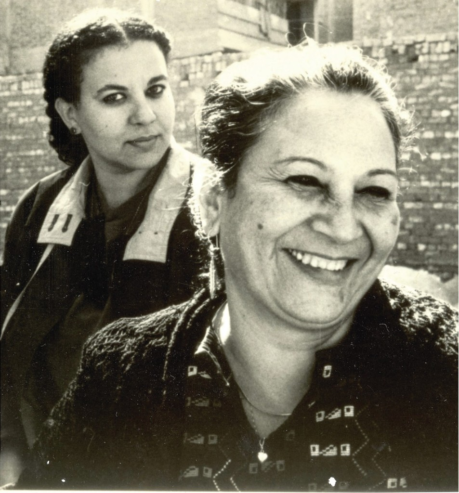
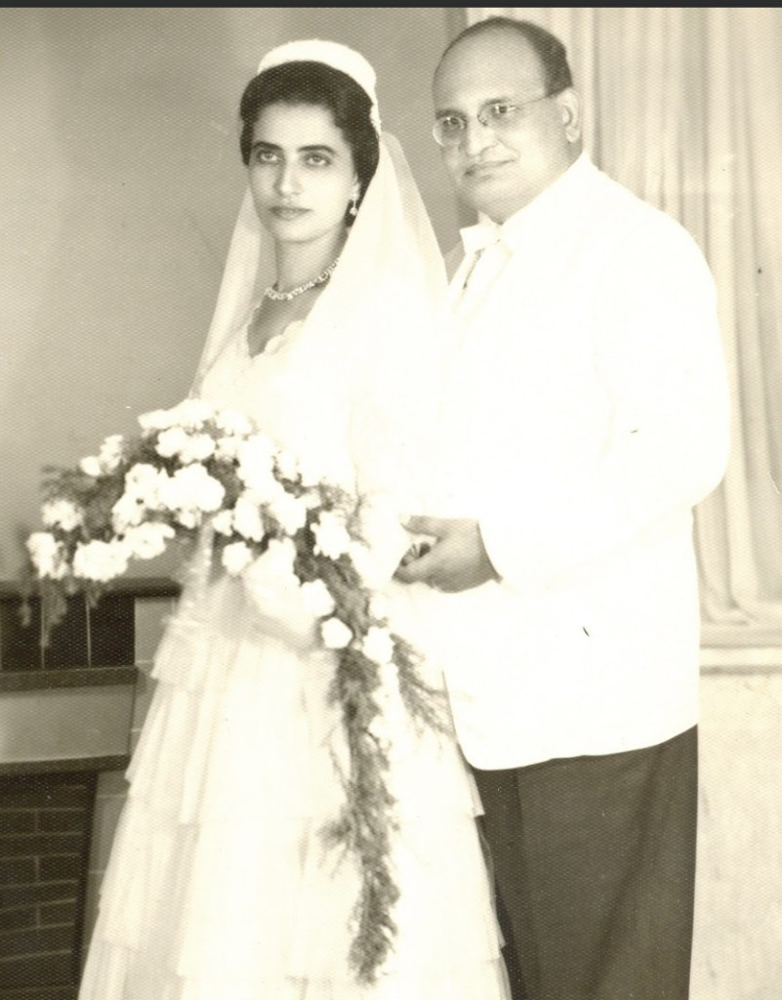
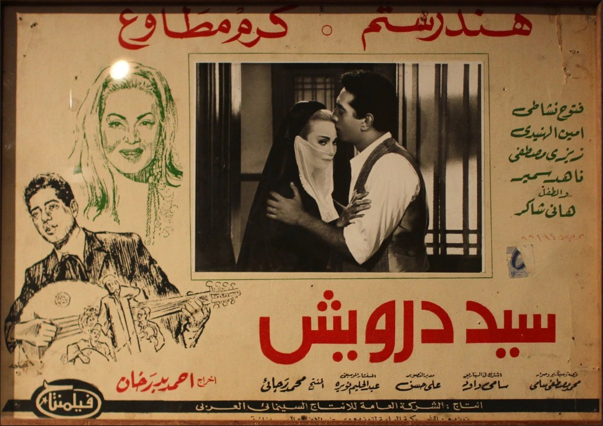
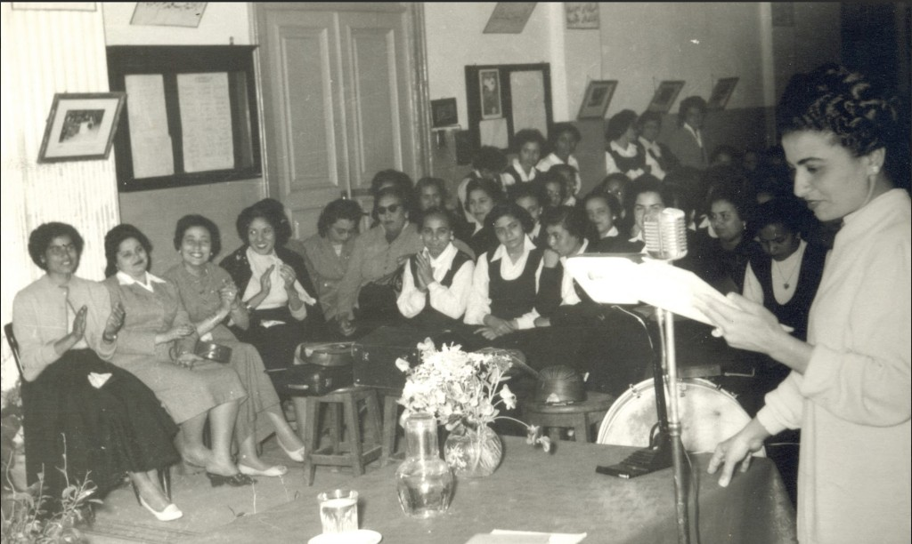
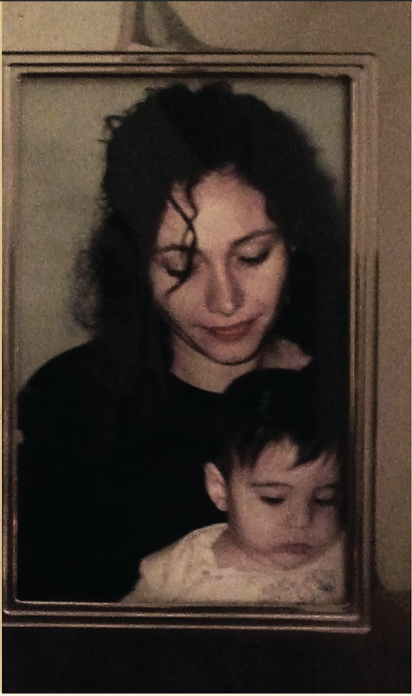

A digital collaboration between The Women and Memory Forum (Egypt) and Georgetown University (USA) students in the SFS Centennial Lab Class, Arab Studies 4478: Heritage and Development in the Arab World.
Women are always on the move. Women engage in different types of work and mobility that inform their journeys through life. They work at home, in the fields, in the workshops, in big cities, small towns, or in other countries. Their work and their movement traverse different spaces, reassembling their relationships as they become part of many other people’s lives. This exhibition introduces glimpses into the lives of 21 women – women, who have worked and moved as doctors, maids, actresses, students, accountants, filmmakers, embroiderers, teachers, artists, and as mothers, daughters, mentors and friends. They live in Egypt, Jordan, Lebanon and Denmark, yet their lives invite us to travel across many more spaces, peoples, and times, and inspire us to rethink familiar meanings and assumptions about women, mobility and work. This exhibition is based on interviews with these diverse women. We are a group of researchers, archivists, museum professionals and young people in these professions, who all share an interest in telling and sharing the stories of these women, whose inspiring tales should be kept and remembered for generations to come. We invite you on a journey through their lives to see how they have moved and for what different reasons. We shed light on the effect that these movements and their work have on their relationships with the people around them and delve into their different types of work to see how they contribute to not only their own lives but also to their families, friends, co-workers and to society.




